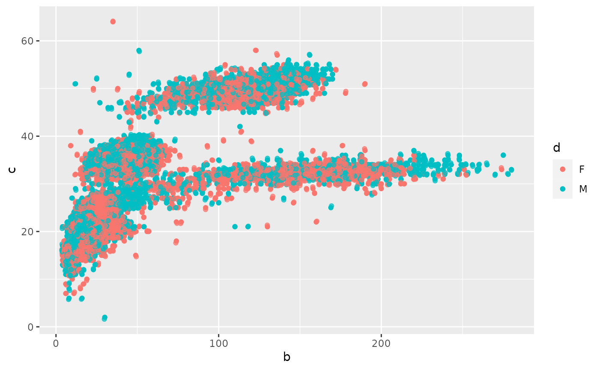
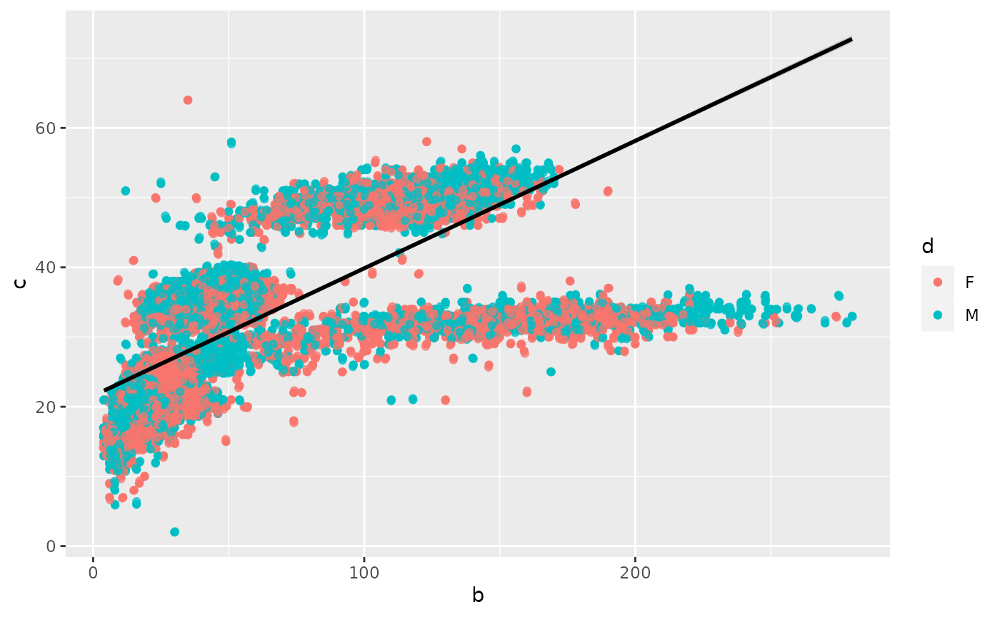

Macri_R_Package_Tutorial.RmdLoad in common libraries used by this package
## ── Attaching packages ─────────────────────────────────────── tidyverse 1.3.1 ──## ✓ tibble 3.1.5 ✓ dplyr 1.0.7
## ✓ tidyr 1.1.4 ✓ stringr 1.4.0
## ✓ readr 2.0.2 ✓ forcats 0.5.1
## ✓ purrr 0.3.4## ── Conflicts ────────────────────────────────────────── tidyverse_conflicts() ──
## x dplyr::filter() masks stats::filter()
## x dplyr::lag() masks stats::lag()Now, we install my R package:
devtools::install_github("dustinmacri/R_package_Macri")## Using github PAT from envvar GITHUB_PAT## Downloading GitHub repo dustinmacri/R_package_Macri@HEAD##
checking for file ‘/tmp/RtmpoQtdJf/remotes218860efe495/dustinmacri-R_package_Macri-88baac9/DESCRIPTION’ ...
[32m✓
[39m
[38;5;247mchecking for file ‘/tmp/RtmpoQtdJf/remotes218860efe495/dustinmacri-R_package_Macri-88baac9/DESCRIPTION’
[39m
[36m
[39m
##
[38;5;247m─
[39m
[38;5;247m
[39m
[38;5;247mpreparing ‘MacriRPackage’:
[39m
[36m
[39m
##
checking DESCRIPTION meta-information ...
[32m✓
[39m
[38;5;247mchecking DESCRIPTION meta-information
[39m
[36m
[39m
##
[38;5;247m─
[39m
[38;5;247m
[39m
[38;5;247mchecking for LF line-endings in source and make files and shell scripts
[39m
[36m
[39m
##
[38;5;247m─
[39m
[38;5;247m
[39m
[38;5;247mchecking for empty or unneeded directories
[39m
[36m
[39m
##
[38;5;247m─
[39m
[38;5;247m
[39m
[38;5;247mlooking to see if a ‘data/datalist’ file should be added
[39m
[36m
[39m
##
[38;5;247m─
[39m
[38;5;247m
[39m
[38;5;247mbuilding ‘MacriRPackage_0.0.0.9000.tar.gz’
[39m
[36m
[39m
##
## ## Installing package into '/tmp/RtmpKjhTMp/temp_libpath1197bc765d4'
## (as 'lib' is unspecified)
library(MacriRPackage)Let us download some data for our package:
download.file("https://raw.githubusercontent.com/BiologicalDataAnalysis2019/2021/main/data/surveys.csv", destfile = "/cloud/project/data/surveys.csv")The ‘read’ function reads the selected file in Tidyverse and removes all NA values from the data that it is reading.
Expected output: A proper data set that has all, if any, NA values removed from it.
This function is a good thing to have as it essentially streamlines the file- reading process by automatically reading files in Tidyverse and removing NA values. This may prove useful when having to perform multiple calculations with various data sets at a time, removing much of the hassle in the process.
surveys <- read("/cloud/project/data/surveys.csv")## Rows: 35549 Columns: 9## ── Column specification ────────────────────────────────────────────────────────
## Delimiter: ","
## chr (2): species_id, sex
## dbl (7): record_id, month, day, year, plot_id, hindfoot_length, weight##
## ℹ Use `spec()` to retrieve the full column specification for this data.
## ℹ Specify the column types or set `show_col_types = FALSE` to quiet this message.The ‘pplot’ function creates a point plot in ggplot2 based on the given inputs: first input is the data set, the second input is the x-axis trait, the third input is the y-axis trait, and the fourth input is the trait that color is based upon.
Expected output: A proper point plot that compares two traits on a data set and has colors determined by a certain trait.
This is a good function to use in order to quickly make a point plot between two traits of a data set. It saves the hassle of making a point plot through ggplot, useful if you are making multiple basic plots at a time; However, the plots are quite basic and only point plots are created.
surveysplot <- pplot(surveys, surveys$weight, surveys$hindfoot_length, surveys$sex)
The ‘linreg’ function produces a linear regression and a resulting summary between two traits of a data set.
Expected output: A summary that includes the linear regression between two specific traits of the data set
This function is great for quickly and efficiently making linear regressions. The simple function has been streamlined to produce linear regression summaries between any two traits on any dataset, perfect for projects that require many regressions to be created and analyzed.
surveyslr <- linreg(surveys, surveys$weight, surveys$hindfoot_length)## Warning in if (is.na(lr)) {: the condition has length > 1 and only the first
## element will be used##
## Call:
## lm(formula = x ~ y, data = a)
##
## Residuals:
## Min 1Q Median 3Q Max
## -95.697 -13.025 -4.026 3.200 229.087
##
## Coefficients:
## Estimate Std. Error t value Pr(>|t|)
## (Intercept) -32.87047 0.47884 -68.65 <2e-16 ***
## y 2.55574 0.01558 164.03 <2e-16 ***
## ---
## Signif. codes: 0 '***' 0.001 '**' 0.01 '*' 0.05 '.' 0.1 ' ' 1
##
## Residual standard error: 26.04 on 30674 degrees of freedom
## Multiple R-squared: 0.4673, Adjusted R-squared: 0.4673
## F-statistic: 2.69e+04 on 1 and 30674 DF, p-value: < 2.2e-16The ‘lrplot’ function essentially combines the last two functions together. It creates a point plot from ggplot based on specific inputs (first input is the data set, the second input is the x-axis trait, the third input is the y-axis trait, and the fourth input is the trait that color is based upon) as well as placing a linear regression on the plot to show any trends in the data.
Expected output: A proper point plot that compares two traits on a data set and has colors determined by a certain trait with a linear regression line to show trends.
This function is good for anyone who just so happens to need to create a point plot with a linear regression placed on top of it. Like the functions before, the function’s goal is streamline the plot and linear regression creation process, which may save someone some time and sanity.
surveyslrplot <- lrplot(surveys, surveys$weight, surveys$hindfoot_length, surveys$sex)## `geom_smooth()` using formula 'y ~ x'